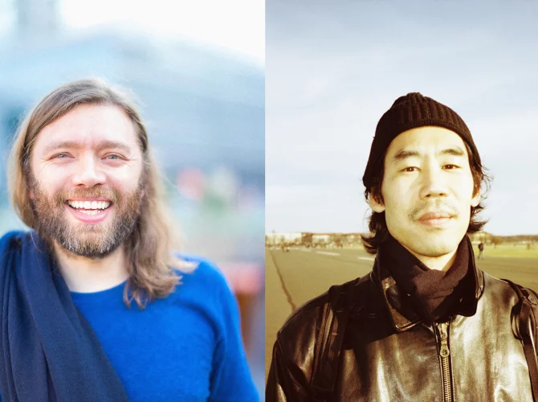

Gerd Janson and HUNEE are renowned DJs and producers known for their dynamic back-to-back sets, combining deep house, disco, and eclectic electronic sounds. Both artists are celebrated for their impeccable track selections and ability to create euphoric atmospheres during live performances.
Gerd Janson and HUNEE's collaborative sets are a masterclass in blending genres, seamlessly transitioning between deep house, disco, and global electronic influences. Their performances are highly regarded for their energy, technical skill, and ability to captivate diverse audiences.
Two DJs for the price of one, that's always an appealing option. In this case, we're talking about two vinyl-loving Germans, although HUNEE has long been based in Amsterdam and Janson was born in Romania. They've played side by side before, and while HUNEE already creates a glorious dancefloor vibe with his regular partner Antal, his style might blend even more seamlessly with Janson's. Together, they craft a disco-house party of epic proportions, with an unparalleled track selection and a built-in seventh-heaven guarantee.
Twee dj’s voor de prijs van één, dat is altijd een aantrekkelijke optie. In dit geval gaat het om twee vinylliefhebbende Duitsers, al woont HUNEE sinds lang in Amsterdam en zag Janson het levenslicht in Roemenië. Toch draaiden ze al vaker zij aan zij en waar HUNEE met zijn vaste maatje Antal al een glorieus danstapijt de vloer opslingert, past zijn stijl misschien nog wel naadlozer bij die van Janson. Samen bouwen ze een discohousefeest van epische proporties, met een onnavolgbare trackselectie en ingebouwde zevendehemelgarantie.
⚤ Mixed
Yes